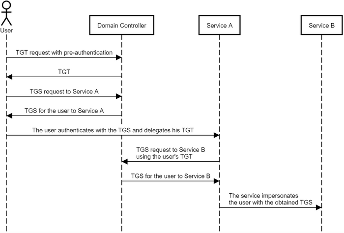

Unconstrained Delegation (TrustedForDelegation)
: The user sends a TGS to access the service,
along with their TGT
, and then the service can use the user’s TGT to request a TGS for the user to any other service and impersonate the user.
